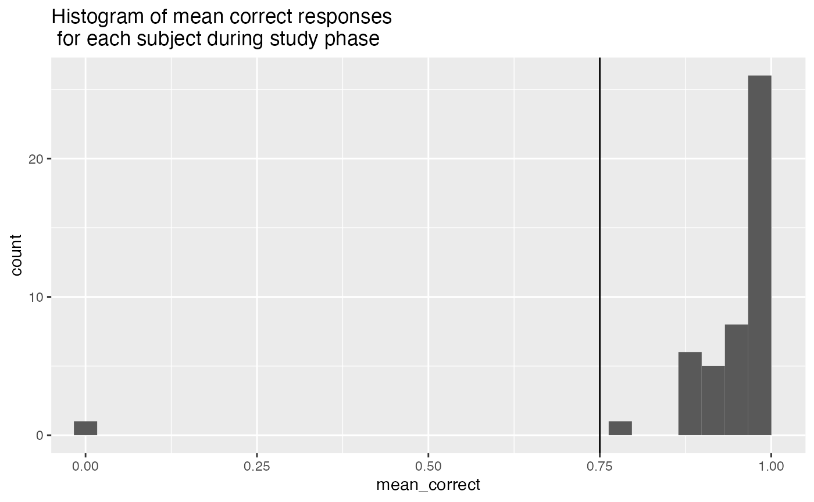
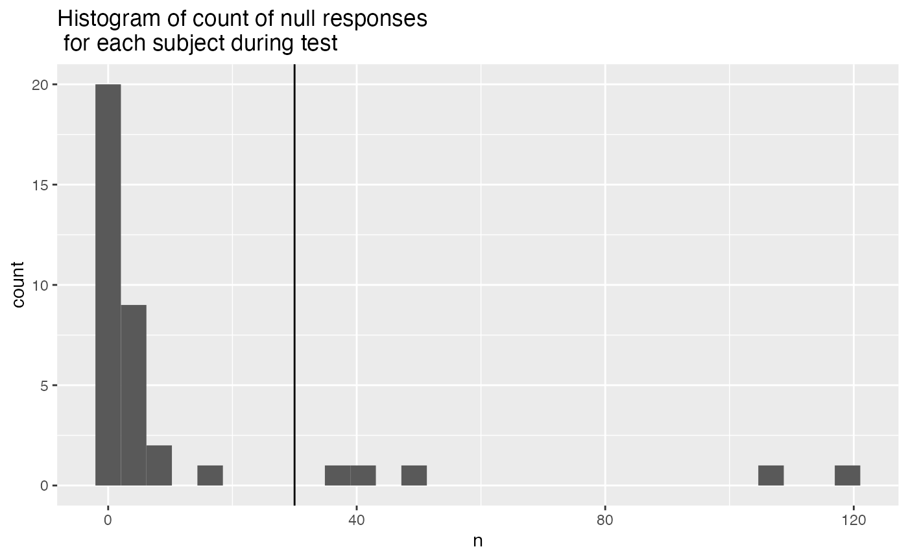
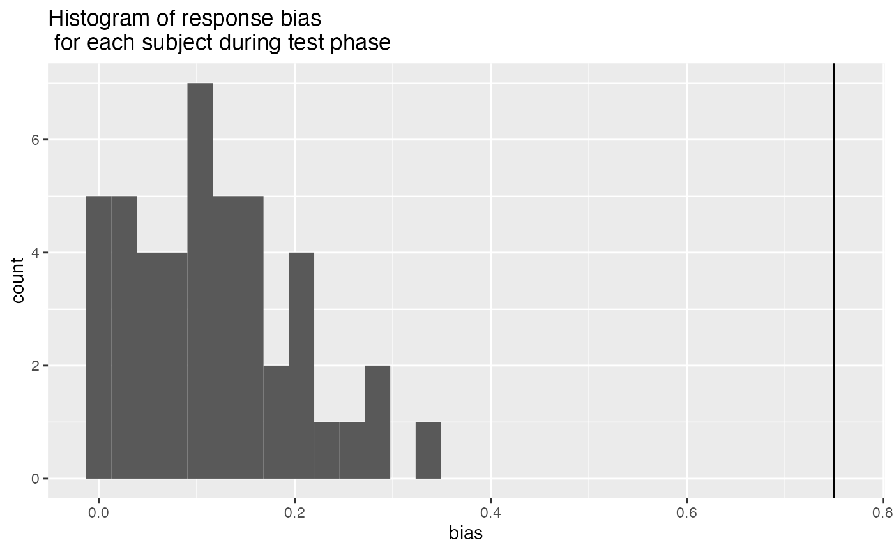
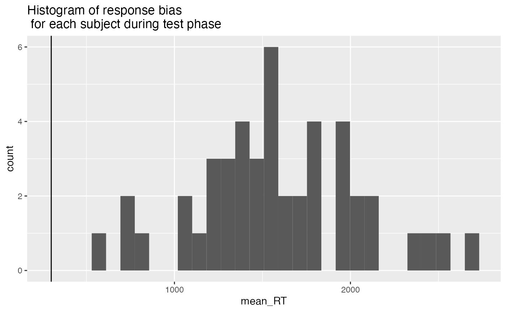
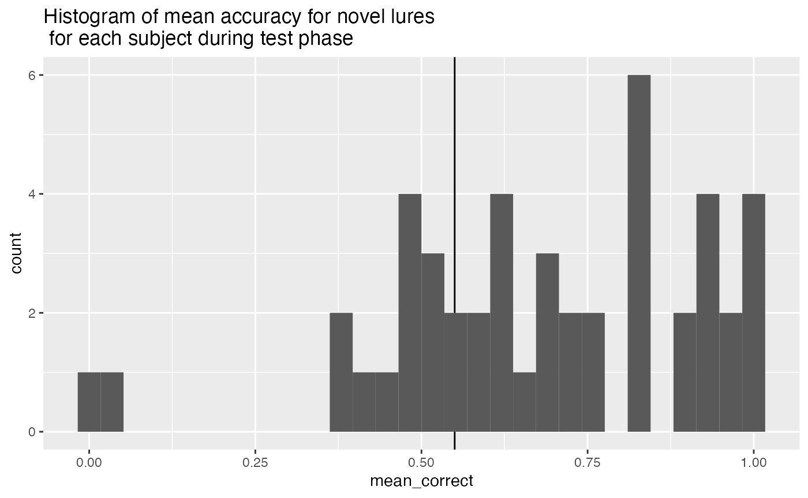
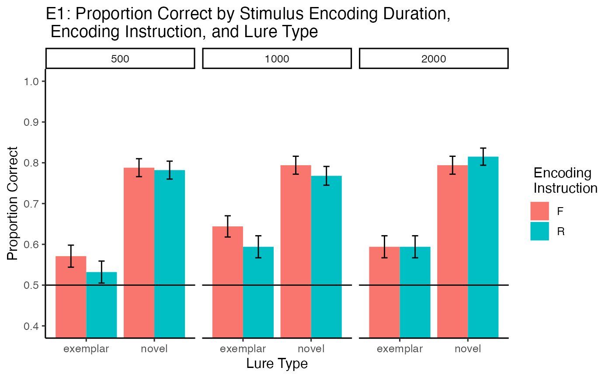
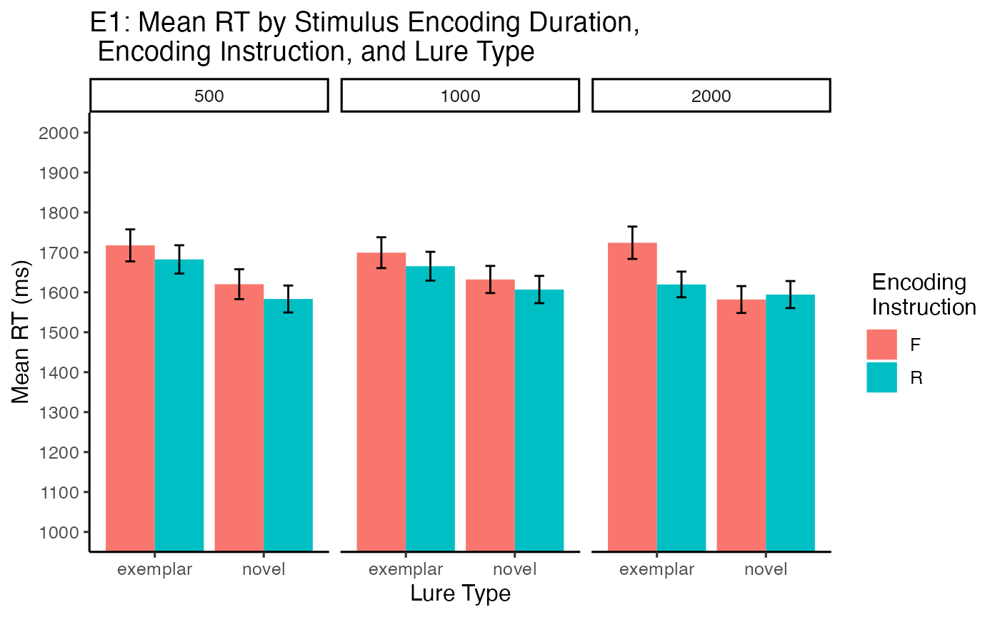

E1_DF_Mixed
E1_DF_Mixed.RmdData collected 2/10/22
Load libraries
library(pacman)
library(dplyr)
library(tidyverse)
library(jsonlite)
library(xtable)
library(data.table)Demographics
library(tidyr)
demographics <- all_data %>%
filter(trial_type == "survey-html-form") %>%
select(ID,response) %>%
unnest_wider(response) %>%
mutate(age = as.numeric(age))
age_demographics <- demographics %>%
summarize(mean_age = mean(age),
sd_age = sd(age),
min_age = min(age),
max_age = max(age))
factor_demographics <- apply(demographics[-1], 2, table)A total of 47 participants were recruited from Amazon’s Mechanical Turk. Mean age was 34.9 (range = 22 to 60 ). There were 23 females, and 24 males. There were 41 right-handed participants, and NA left or both handed participants. 37 participants reported normal vision, and 10 participants reported corrected-to-normal vision. 37 participants reported English as a first language, and 10 participants reported English as a second language.
Pre-processing
We are interested in including participants who attempted to perform the task to the best of their ability. We adopted the following exclusion criteria.
- Lower than 75% correct during the encoding task. This means that participants failed to correctly press the F or R keys on each trial.
# select data from the study phase
study_accuracy <- all_data %>%
filter(experiment_phase == "study",
is.na(correct) == FALSE) %>%
group_by(ID)%>%
summarize(mean_correct = mean(correct))
study_excluded_subjects <- study_accuracy %>%
filter(mean_correct < .75) %>%
pull(ID)
ggplot(study_accuracy, aes(x=mean_correct))+
coord_cartesian(xlim=c(0,1))+
geom_vline(xintercept=.75)+
geom_histogram()+
ggtitle("Histogram of mean correct responses \n for each subject during study phase")
- More than 25% Null responses (120*.25 = 30) during test. NULL responses mean that the participant did not respond on a test trial after 10 seconds.
# select data from the study phase
test_null <- all_data %>%
filter(experiment_phase == "test",
response =="NULL") %>%
group_by(ID) %>%
count()
test_null_excluded <- test_null %>%
filter(n > (120*.25)) %>%
pull(ID)
ggplot(test_null, aes(x=n))+
geom_vline(xintercept=30)+
geom_histogram()+
ggtitle("Histogram of count of null responses \n for each subject during test")
- Higher than 75% response bias in the recognition task. This suggests that participants were simply pressing the same button on most trials.
test_response_bias <- all_data %>%
filter(experiment_phase == "test",
response !="NULL") %>%
mutate(response = as.numeric(response)) %>%
group_by(ID, response) %>%
count() %>%
pivot_wider(names_from = response,
values_from = n,
values_fill = 0) %>%
mutate(bias = abs(`0` - `1`)/120)
test_response_bias_excluded <- test_response_bias %>%
filter(bias > .75) %>%
pull(ID)
ggplot(test_response_bias, aes(x=bias))+
geom_vline(xintercept=.75)+
geom_histogram()+
ggtitle("Histogram of response bias \n for each subject during test phase")
- Making responses too fast during the recognition memory test, indicating that they weren’t performing the task. We excluded participants whose mean RT was less than 300 ms.
test_mean_rt <- all_data %>%
filter(experiment_phase == "test",
response !="NULL",
rt != "NULL") %>%
mutate(rt = as.numeric(rt)) %>%
group_by(ID) %>%
summarize(mean_RT = mean(rt))
test_mean_rt_excluded <- test_mean_rt %>%
filter(mean_RT < 300) %>%
pull(ID)
ggplot(test_mean_rt, aes(x=mean_RT))+
geom_vline(xintercept=300)+
geom_histogram()+
ggtitle("Histogram of response bias \n for each subject during test phase")
- Subjects are included if they perform better than 55% correct on the novel lures.
test_mean_novel_accuracy <- all_data %>%
filter(experiment_phase == "test",
test_condition == "novel") %>%
mutate(correct = as.logical(correct)) %>%
group_by(ID) %>%
summarize(mean_correct = mean(correct))
test_mean_novel_accuracy_excluded <- test_mean_novel_accuracy %>%
filter(mean_correct < .55) %>%
pull(ID)
ggplot(test_mean_novel_accuracy, aes(x=mean_correct))+
geom_vline(xintercept=.55)+
geom_histogram()+
ggtitle("Histogram of mean accuracy for novel lures \n for each subject during test phase")
All exclusions
all_excluded <- unique(c(study_excluded_subjects,
test_null_excluded,
test_response_bias_excluded,
test_mean_rt_excluded,
test_mean_novel_accuracy_excluded))
length(all_excluded)## [1] 13Our participants were recruited online and completed the experiment from a web browser. Our experiment script requests that participants attempt the task to the best of their ability. Nevertheless, it is possible that participants complete the experiment and submit data without attempting to complete the task as directed. We developed a set of criteria to exclude participants whose performance indicated they were not attempting the task as instructed. These criteria also allowed us to confirm that the participants we included in the analysis did attempt the task as instructed to the best of their ability. We adopted the following five criteria:
First, during the encoding phase participants responded to each instructional cue (to remember or forget the picture on each trial) by pressing “R” or “F” on the keyboard. This task demand further served as an attentional check. We excluded participants who scored lower than 75% correct on instructional cue identification responses. Second, participants who did not respond on more than 25% of trials in the recognition test were excluded. Third, we measured response bias (choosing the left or right picture) during the recognition test, and excluded participants who made 75% of their responses to one side (indicating they were repeatedly pressing the same button on each trial). Fourth, we excluded participants whose mean reaction time during the recognition test was less than 300ms, indicating they were pressing the buttons as fast as possible without making a recognition decision. Finally, we computed mean accuracy for the novel lure condition for all participants, and excluded participants whose mean accuracy was less than 55% for those items. All together 13 participants were excluded.
Accuracy analysis
Define Helper functions
To do, consider moving the functions into the R package for this project
# attempt general solution
## Declare helper functions
################
# get_mean_sem
# data = a data frame
# grouping_vars = a character vector of factors for analysis contained in data
# dv = a string indicated the dependent variable colunmn name in data
# returns data frame with grouping variables, and mean_{dv}, sem_{dv}
# note: dv in mean_{dv} and sem_{dv} is renamed to the string in dv
get_mean_sem <- function(data, grouping_vars, dv, digits=3){
a <- data %>%
group_by_at(grouping_vars) %>%
summarize("mean_{ dv }" := round(mean(.data[[dv]]), digits),
"sem_{ dv }" := round(sd(.data[[dv]])/sqrt(length(.data[[dv]])),digits),
.groups="drop")
return(a)
}
################
# get_effect_names
# grouping_vars = a character vector of factors for analysis
# returns a named list
# list contains all main effects and interaction terms
# useful for iterating the computation means across design effects and interactions
get_effect_names <- function(grouping_vars){
effect_names <- grouping_vars
if( length(grouping_vars > 1) ){
for( i in 2:length(grouping_vars) ){
effect_names <- c(effect_names,apply(combn(grouping_vars,i),2,paste0,collapse=":"))
}
}
effects <- strsplit(effect_names, split=":")
names(effects) <- effect_names
return(effects)
}
################
# print_list_of_tables
# table_list = a list of named tables
# each table is printed
# names are header level 3
print_list_of_tables <- function(table_list){
for(i in 1:length(table_list)){
cat("###",names(table_list[i]))
cat("\n")
print(knitr::kable(table_list[[i]]))
cat("\n")
}
}Conduct Analysis
# create list to hold results
Accuracy <- list()
# Pre-process data for analysis
# assign to "filtered_data" object
Accuracy$filtered_data <- all_data %>%
filter(experiment_phase == "test",
ID %in% all_excluded == FALSE)
# declare factors, IVS, subject variable, and DV
Accuracy$factors$IVs <- c("encoding_stimulus_time",
"encoding_instruction",
"test_condition")
Accuracy$factors$subject <- "ID"
Accuracy$factors$DV <- "correct"
## Subject-level means used for ANOVA
# get individual subject means for each condition
Accuracy$subject_means <- get_mean_sem(data=Accuracy$filtered_data,
grouping_vars = c(Accuracy$factors$subject,
Accuracy$factors$IVs),
dv = Accuracy$factors$DV)
## Condition-level means
# get all possible main effects and interactions
Accuracy$effects <- get_effect_names(Accuracy$factors$IVs)
Accuracy$means <- lapply(Accuracy$effects, FUN = function(x) {
get_mean_sem(data=Accuracy$filtered_data,
grouping_vars = x,
dv = Accuracy$factors$DV)
})
## ANOVA
# ensure factors are factor class
Accuracy$subject_means <- Accuracy$subject_means %>%
mutate_at(Accuracy$factors$IVs,factor) %>%
mutate_at(Accuracy$factors$subject,factor)
# run ANOVA
Accuracy$aov.out <- aov(mean_correct ~ encoding_stimulus_time*encoding_instruction*test_condition + Error(ID/(encoding_stimulus_time*encoding_instruction*test_condition)), Accuracy$subject_means)
# save printable summaries
Accuracy$apa_print <- papaja::apa_print(Accuracy$aov.out)Graphs
Accuracy$graphs$figure <- ggplot(Accuracy$means$`encoding_stimulus_time:encoding_instruction:test_condition`,
aes(x=test_condition,
y=mean_correct,
group=encoding_instruction,
fill=encoding_instruction))+
geom_bar(stat="identity", position="dodge")+
geom_errorbar(aes(ymin = mean_correct-sem_correct,
ymax = mean_correct+sem_correct),
width=.9, position=position_dodge2(width = 0.2, padding = 0.8))+
facet_wrap(~encoding_stimulus_time)+
coord_cartesian(ylim=c(.4,1))+
geom_hline(yintercept=.5)+
scale_y_continuous(breaks = seq(0.4,1,.1))+
theme_classic(base_size=12)+
ylab("Proportion Correct")+
xlab("Lure Type")+
scale_fill_discrete(name = " Encoding \n Instruction") +
ggtitle("E1: Proportion Correct by Stimulus Encoding Duration, \n Encoding Instruction, and Lure Type")
Accuracy$graphs$figure
Print ANOVA
| Df | Sum Sq | Mean Sq | F value | Pr(>F) | |
|---|---|---|---|---|---|
| Residuals | 33 | 4.7925490 | 0.1452288 | NA | NA |
| encoding_stimulus_time | 2 | 0.0885784 | 0.0442892 | 2.6182656 | 0.0804931 |
| Residuals | 66 | 1.1164216 | 0.0169155 | NA | NA |
| encoding_instruction | 1 | 0.0283333 | 0.0283333 | 1.9547038 | 0.1714078 |
| Residuals | 33 | 0.4783333 | 0.0144949 | NA | NA |
| test_condition | 1 | 4.1603922 | 4.1603922 | 133.3448867 | 0.0000000 |
| Residuals | 33 | 1.0296078 | 0.0312002 | NA | NA |
| encoding_stimulus_time:encoding_instruction | 2 | 0.0415196 | 0.0207598 | 0.9470100 | 0.3931059 |
| Residuals | 66 | 1.4468137 | 0.0219214 | NA | NA |
| encoding_stimulus_time:test_condition | 2 | 0.0918137 | 0.0459069 | 2.9904204 | 0.0571205 |
| Residuals | 66 | 1.0131863 | 0.0153513 | NA | NA |
| encoding_instruction:test_condition | 1 | 0.0165686 | 0.0165686 | 1.2423702 | 0.2730668 |
| Residuals | 33 | 0.4400980 | 0.0133363 | NA | NA |
| encoding_stimulus_time:encoding_instruction:test_condition | 2 | 0.0006373 | 0.0003186 | 0.0121719 | 0.9879041 |
| Residuals | 66 | 1.7276961 | 0.0261772 | NA | NA |
Print Means
print_list_of_tables(Accuracy$means)encoding_stimulus_time
| encoding_stimulus_time | mean_correct | sem_correct |
|---|---|---|
| 500 | 0.668 | 0.013 |
| 1000 | 0.700 | 0.012 |
| 2000 | 0.699 | 0.012 |
encoding_stimulus_time:encoding_instruction
| encoding_stimulus_time | encoding_instruction | mean_correct | sem_correct |
|---|---|---|---|
| 500 | F | 0.679 | 0.018 |
| 500 | R | 0.657 | 0.018 |
| 1000 | F | 0.719 | 0.017 |
| 1000 | R | 0.681 | 0.018 |
| 2000 | F | 0.694 | 0.018 |
| 2000 | R | 0.704 | 0.018 |
encoding_stimulus_time:test_condition
| encoding_stimulus_time | test_condition | mean_correct | sem_correct |
|---|---|---|---|
| 500 | exemplar | 0.551 | 0.019 |
| 500 | novel | 0.785 | 0.016 |
| 1000 | exemplar | 0.619 | 0.019 |
| 1000 | novel | 0.781 | 0.016 |
| 2000 | exemplar | 0.594 | 0.019 |
| 2000 | novel | 0.804 | 0.015 |
encoding_instruction:test_condition
| encoding_instruction | test_condition | mean_correct | sem_correct |
|---|---|---|---|
| F | exemplar | 0.603 | 0.015 |
| F | novel | 0.792 | 0.013 |
| R | exemplar | 0.574 | 0.015 |
| R | novel | 0.788 | 0.013 |
encoding_stimulus_time:encoding_instruction:test_condition
| encoding_stimulus_time | encoding_instruction | test_condition | mean_correct | sem_correct |
|---|---|---|---|---|
| 500 | F | exemplar | 0.571 | 0.027 |
| 500 | F | novel | 0.788 | 0.022 |
| 500 | R | exemplar | 0.532 | 0.027 |
| 500 | R | novel | 0.782 | 0.022 |
| 1000 | F | exemplar | 0.644 | 0.026 |
| 1000 | F | novel | 0.794 | 0.022 |
| 1000 | R | exemplar | 0.594 | 0.027 |
| 1000 | R | novel | 0.768 | 0.023 |
| 2000 | F | exemplar | 0.594 | 0.027 |
| 2000 | F | novel | 0.794 | 0.022 |
| 2000 | R | exemplar | 0.594 | 0.027 |
| 2000 | R | novel | 0.815 | 0.021 |
Comparisons
## Encoding time x instruction
Accuracy$simple$DF_500 <- Accuracy$subject_means %>%
filter(encoding_stimulus_time == "500") %>%
group_by(ID,encoding_instruction) %>%
summarize(mean_correct = mean(mean_correct)) %>%
pivot_wider(names_from = encoding_instruction,
values_from = mean_correct) %>%
mutate(difference = R-F) %>%
pull(difference) %>%
t.test() %>%
papaja::apa_print()
Accuracy$simple$DF_1000 <- Accuracy$subject_means %>%
filter(encoding_stimulus_time == "1000") %>%
group_by(ID,encoding_instruction) %>%
summarize(mean_correct = mean(mean_correct)) %>%
pivot_wider(names_from = encoding_instruction,
values_from = mean_correct) %>%
mutate(difference = R-F) %>%
pull(difference) %>%
t.test() %>%
papaja::apa_print()
Accuracy$simple$DF_2000 <- Accuracy$subject_means %>%
filter(encoding_stimulus_time == "2000") %>%
group_by(ID,encoding_instruction) %>%
summarize(mean_correct = mean(mean_correct)) %>%
pivot_wider(names_from = encoding_instruction,
values_from = mean_correct) %>%
mutate(difference = R-F) %>%
pull(difference) %>%
t.test() %>%
papaja::apa_print()
# encoding time x test condition
Accuracy$simple$test_500 <- Accuracy$subject_means %>%
filter(encoding_stimulus_time == "500") %>%
group_by(ID,test_condition) %>%
summarize(mean_correct = mean(mean_correct)) %>%
pivot_wider(names_from = test_condition,
values_from = mean_correct) %>%
mutate(difference = novel-exemplar) %>%
pull(difference) %>%
t.test() %>%
papaja::apa_print()
Accuracy$simple$test_1000 <- Accuracy$subject_means %>%
filter(encoding_stimulus_time == "1000") %>%
group_by(ID,test_condition) %>%
summarize(mean_correct = mean(mean_correct)) %>%
pivot_wider(names_from = test_condition,
values_from = mean_correct) %>%
mutate(difference = novel-exemplar) %>%
pull(difference) %>%
t.test() %>%
papaja::apa_print()
Accuracy$simple$test_2000 <- Accuracy$subject_means %>%
filter(encoding_stimulus_time == "2000") %>%
group_by(ID,test_condition) %>%
summarize(mean_correct = mean(mean_correct)) %>%
pivot_wider(names_from = test_condition,
values_from = mean_correct) %>%
mutate(difference = novel-exemplar) %>%
pull(difference) %>%
t.test() %>%
papaja::apa_print()Write-up
## helper print functions
qprint <- function(data,iv,level,dv){
data[[iv]] %>%
filter(.data[[iv]] == {level}) %>%
pull(dv)
}
qprint_mean_sem <- function(data,iv,level,dv){
dv_mean <- data[[iv]] %>%
filter(.data[[iv]] == {level}) %>%
pull(dv[1])
dv_sem <- data[[iv]] %>%
filter(.data[[iv]] == {level}) %>%
pull(dv[2])
return(paste("M = ",
dv_mean,
", SEM = ",
dv_sem,
sep=""))
}
# qprint(Accuracy$means,"encoding_stimulus_time","500","mean_correct")
# qprint_mean_sem(Accuracy$means,"encoding_stimulus_time","500",c("mean_correct","sem_correct"))
# use data.table for interactions
#t <- as.data.table(Accuracy$means$`encoding_stimulus_time:encoding_instruction`)
#t[encoding_stimulus_time==500 & encoding_instruction == "F"]$mean_correctProportion correct for each subject in each condition was submitted to a 3 (Encoding Duration: 500ms, 1000ms, 2000ms) x 2 (Encoding Instruction: Forget vs. Remember) x 2 (Lure type: Novel vs. Exemplar) fully repeated measures ANOVA. For completeness, each main effect and higher-order interaction is described in turn.
The main effect of encoding duration was not significant, \(F(2, 66) = 2.62\), \(p = .080\), \(\hat{\eta}^2_G = .007\), 90% CI \([.000, .048]\). Proportion correct was similar across the 500 ms (M = 0.668, SEM = 0.013), 1000 ms (M = 0.7, SEM = 0.012), and 2000 ms (M = 0.699, SEM = 0.012) stimulus durations.
The main effect of encoding instruction was not significant, \(F(1, 33) = 1.95\), \(p = .171\), \(\hat{\eta}^2_G = .002\), 90% CI \([.000, .005]\). Proportion correct was similar for remember cues (M = 0.681, SEM = 0.01) and forget cues (M = 0.698, SEM = 0.01).
The main effect of lure type was significant, \(F(1, 33) = 133.34\), \(p < .001\), \(\hat{\eta}^2_G = .257\), 90% CI \([.070, .444]\). Proportion correct was higher for novel lures (M = 0.79, SEM = 0.009) than exemplar lures (M = 0.588, SEM = 0.011).
The main question of interest was whether directing forgetting would vary across the encoding duration times. The interaction between encoding instruction and encoding duration was, \(F(2, 66) = 0.95\), \(p = .393\), \(\hat{\eta}^2_G = .003\), 90% CI \([.000, .024]\).
Paired sample t-tests were used to assess the directed forgetting effect at each encoding duration. The directed forgetting effect is taken as the difference between proportion correct for remember minus forget items. At 500 ms, the directed forgetting effect was reversed and not significant, \(M = -0.02\), 95% CI \([-0.07, 0.03]\), \(t(33) = -0.86\), \(p = .398\). At 1000ms, the directed forgetting effect was reversed and not significant, \(M = -0.04\), 95% CI \([-0.09, 0.01]\), \(t(33) = -1.61\), \(p = .118\). And, at 2000 ms, the directed forgetting effect was again not detected, \(M = 0.01\), 95% CI \([-0.03, 0.06]\), \(t(33) = 0.47\), \(p = .643\).
The encoding duration by lure type interaction was, \(F(2, 66) = 2.99\), \(p = .057\), \(\hat{\eta}^2_G = .008\), 90% CI \([.000, .049]\). In the 500 ms condition, proportion correct was higher for novel than exemplar lures, \(M = 0.23\), 95% CI \([0.19, 0.28]\), \(t(33) = 10.00\), \(p < .001\). The advantage for novel over exemplar items was smaller in the 1000 ms condition, \(M = 0.16\), 95% CI \([0.11, 0.21]\), \(t(33) = 6.80\), \(p < .001\), and 2000 ms condition \(M = 0.21\), 95% CI \([0.16, 0.26]\), \(t(33) = 7.91\), \(p < .001\).
The encoding instruction by lure type interaction was not significant, \(F(1, 33) = 1.24\), \(p = .273\), \(\hat{\eta}^2_G = .001\), 90% CI \([.000, .069]\). Similarly, the interaction between encoding duration, instruction, and lure type was not significant, \(F(2, 66) = 0.01\), \(p = .988\), \(\hat{\eta}^2_G = .000\), 90% CI \([.000, .000]\).
Reaction Time Analysis
Conduct Analysis
# create list to hold results
RT <- list()
# Pre-process data for analysis
# assign to "filtered_data" object
RT$filtered_data <- all_data %>%
filter(experiment_phase == "test",
ID %in% all_excluded == FALSE,
rt != "NULL") %>%
mutate(rt = as.numeric(rt))
# declare factors, IVS, subject variable, and DV
RT$factors$IVs <- c("encoding_stimulus_time",
"encoding_instruction",
"test_condition")
RT$factors$subject <- "ID"
RT$factors$DV <- "rt"
## Subject-level means used for ANOVA
# get individual subject means for each condition
RT$subject_means <- get_mean_sem(data=RT$filtered_data,
grouping_vars = c(RT$factors$subject,
RT$factors$IVs),
dv = RT$factors$DV)
## Condition-level means
# get all possible main effects and interactions
RT$effects <- get_effect_names(RT$factors$IVs)
RT$means <- lapply(RT$effects, FUN = function(x) {
get_mean_sem(data=RT$filtered_data,
grouping_vars = x,
dv = RT$factors$DV)
})
## ANOVA
# ensure factors are factor class
RT$subject_means <- RT$subject_means %>%
mutate_at(RT$factors$IVs,factor) %>%
mutate_at(RT$factors$subject,factor)
# run ANOVA
RT$aov.out <- aov(mean_rt ~ encoding_stimulus_time*encoding_instruction*test_condition + Error(ID/(encoding_stimulus_time*encoding_instruction*test_condition)), RT$subject_means)
# save printable summaries
RT$apa_print <- papaja::apa_print(RT$aov.out)Graphs
RT$graphs$figure <- ggplot(RT$means$`encoding_stimulus_time:encoding_instruction:test_condition`,
aes(x=test_condition,
y=mean_rt,
group=encoding_instruction,
fill=encoding_instruction))+
geom_bar(stat="identity", position="dodge")+
geom_errorbar(aes(ymin = mean_rt-sem_rt,
ymax = mean_rt+sem_rt),
width=.9, position=position_dodge2(width = 0.2, padding = 0.8))+
facet_wrap(~encoding_stimulus_time)+
coord_cartesian(ylim=c(1000,2000))+
scale_y_continuous(breaks = seq(1000,2000,100))+
theme_classic(base_size=12)+
ylab("Mean RT (ms)")+
xlab("Lure Type")+
scale_fill_discrete(name = " Encoding \n Instruction") +
ggtitle("E1: Mean RT by Stimulus Encoding Duration, \n Encoding Instruction, and Lure Type")
RT$graphs$figure
Print ANOVA
| Df | Sum Sq | Mean Sq | F value | Pr(>F) | |
|---|---|---|---|---|---|
| Residuals | 33 | 42156245.885 | 1277461.997 | NA | NA |
| encoding_stimulus_time | 2 | 30341.855 | 15170.928 | 0.4795306 | 0.6212139 |
| Residuals | 66 | 2088044.555 | 31637.039 | NA | NA |
| encoding_instruction | 1 | 177573.172 | 177573.172 | 5.4367884 | 0.0259695 |
| Residuals | 33 | 1077826.505 | 32661.409 | NA | NA |
| test_condition | 1 | 604114.759 | 604114.759 | 6.7383947 | 0.0139775 |
| Residuals | 33 | 2958536.560 | 89652.623 | NA | NA |
| encoding_stimulus_time:encoding_instruction | 2 | 2582.818 | 1291.409 | 0.0415036 | 0.9593709 |
| Residuals | 66 | 2053626.396 | 31115.551 | NA | NA |
| encoding_stimulus_time:test_condition | 2 | 25851.951 | 12925.976 | 0.3841409 | 0.6825481 |
| Residuals | 66 | 2220837.224 | 33649.049 | NA | NA |
| encoding_instruction:test_condition | 1 | 57136.209 | 57136.209 | 1.2656738 | 0.2686962 |
| Residuals | 33 | 1489716.354 | 45142.920 | NA | NA |
| encoding_stimulus_time:encoding_instruction:test_condition | 2 | 71921.183 | 35960.592 | 1.1484839 | 0.3233724 |
| Residuals | 66 | 2066549.737 | 31311.360 | NA | NA |
Print Means
print_list_of_tables(RT$means)encoding_stimulus_time
| encoding_stimulus_time | mean_rt | sem_rt |
|---|---|---|
| 500 | 1650.684 | 18.405 |
| 1000 | 1650.887 | 17.881 |
| 2000 | 1630.329 | 17.658 |
encoding_stimulus_time:encoding_instruction
| encoding_stimulus_time | encoding_instruction | mean_rt | sem_rt |
|---|---|---|---|
| 500 | F | 1668.729 | 27.447 |
| 500 | R | 1632.639 | 24.530 |
| 1000 | F | 1665.714 | 25.728 |
| 1000 | R | 1635.926 | 24.835 |
| 2000 | F | 1653.363 | 26.477 |
| 2000 | R | 1606.984 | 23.309 |
encoding_stimulus_time:test_condition
| encoding_stimulus_time | test_condition | mean_rt | sem_rt |
|---|---|---|---|
| 500 | exemplar | 1699.975 | 26.751 |
| 500 | novel | 1601.832 | 25.177 |
| 1000 | exemplar | 1682.482 | 26.421 |
| 1000 | novel | 1619.575 | 24.079 |
| 2000 | exemplar | 1672.553 | 25.967 |
| 2000 | novel | 1588.167 | 23.847 |
encoding_instruction:test_condition
| encoding_instruction | test_condition | mean_rt | sem_rt |
|---|---|---|---|
| F | exemplar | 1713.690 | 22.923 |
| F | novel | 1611.474 | 20.238 |
| R | exemplar | 1655.898 | 19.969 |
| R | novel | 1594.880 | 19.559 |
encoding_stimulus_time:encoding_instruction:test_condition
| encoding_stimulus_time | encoding_instruction | test_condition | mean_rt | sem_rt |
|---|---|---|---|---|
| 500 | F | exemplar | 1717.554 | 40.068 |
| 500 | F | novel | 1620.339 | 37.417 |
| 500 | R | exemplar | 1682.396 | 35.490 |
| 500 | R | novel | 1583.324 | 33.723 |
| 1000 | F | exemplar | 1699.271 | 38.618 |
| 1000 | F | novel | 1632.158 | 33.964 |
| 1000 | R | exemplar | 1665.387 | 36.053 |
| 1000 | R | novel | 1606.993 | 34.178 |
| 2000 | F | exemplar | 1724.132 | 40.490 |
| 2000 | F | novel | 1581.961 | 33.678 |
| 2000 | R | exemplar | 1619.728 | 32.100 |
| 2000 | R | novel | 1594.392 | 33.818 |
Comparisons
## Encoding time x instruction
RT$simple$DF_500 <- RT$subject_means %>%
filter(encoding_stimulus_time == "500") %>%
group_by(ID,encoding_instruction) %>%
summarize(mean_rt = mean(mean_rt)) %>%
pivot_wider(names_from = encoding_instruction,
values_from = mean_rt) %>%
mutate(difference = R-F) %>%
pull(difference) %>%
t.test() %>%
papaja::apa_print()
RT$simple$DF_1000 <- RT$subject_means %>%
filter(encoding_stimulus_time == "1000") %>%
group_by(ID,encoding_instruction) %>%
summarize(mean_rt = mean(mean_rt)) %>%
pivot_wider(names_from = encoding_instruction,
values_from = mean_rt) %>%
mutate(difference = R-F) %>%
pull(difference) %>%
t.test() %>%
papaja::apa_print()
RT$simple$DF_2000 <- RT$subject_means %>%
filter(encoding_stimulus_time == "2000") %>%
group_by(ID,encoding_instruction) %>%
summarize(mean_rt = mean(mean_rt)) %>%
pivot_wider(names_from = encoding_instruction,
values_from = mean_rt) %>%
mutate(difference = R-F) %>%
pull(difference) %>%
t.test() %>%
papaja::apa_print()
# encoding time x test condition
RT$simple$test_500 <- RT$subject_means %>%
filter(encoding_stimulus_time == "500") %>%
group_by(ID,test_condition) %>%
summarize(mean_rt = mean(mean_rt)) %>%
pivot_wider(names_from = test_condition,
values_from = mean_rt) %>%
mutate(difference = novel-exemplar) %>%
pull(difference) %>%
t.test() %>%
papaja::apa_print()
RT$simple$test_1000 <- RT$subject_means %>%
filter(encoding_stimulus_time == "1000") %>%
group_by(ID,test_condition) %>%
summarize(mean_rt = mean(mean_rt)) %>%
pivot_wider(names_from = test_condition,
values_from = mean_rt) %>%
mutate(difference = novel-exemplar) %>%
pull(difference) %>%
t.test() %>%
papaja::apa_print()
RT$simple$test_2000 <- RT$subject_means %>%
filter(encoding_stimulus_time == "2000") %>%
group_by(ID,test_condition) %>%
summarize(mean_rt = mean(mean_rt)) %>%
pivot_wider(names_from = test_condition,
values_from = mean_rt) %>%
mutate(difference = novel-exemplar) %>%
pull(difference) %>%
t.test() %>%
papaja::apa_print()Write-up
Mean reaction times on correct trials for each subject in each condition were submitted to a 3 (Encoding Duration: 500ms, 1000ms, 2000ms) x 2 (Encoding Instruction: Forget vs. Remember) x 2 (Lure type: Novel vs. Exemplar) fully repeated measures ANOVA. For brevity we report only the significant effects. The full analysis is contained in supplementary materials.
The main effect of encoding instruction was significant, \(F(1, 33) = 5.44\), \(p = .026\), \(\hat{\eta}^2_G = .003\), 90% CI \([.000, .092]\). Mean reaction times were faster for choosing remember cued items (M = 1625.191, SEM = 13.987) than forget cued items (M = 1662.582, SEM = 15.328).
The main effect of lure type was significant, \(F(1, 33) = 6.74\), \(p = .014\), \(\hat{\eta}^2_G = .011\), 90% CI \([.000, .130]\). Mean reaction times were faster in the novel lure condition (M = 1603.181, SEM = 14.07) than exemplar lure condition (M = 1684.996, SEM = 15.225).
The remaining main effects and interactions were not significant.
save environment
save.image("data/E1/E1_data_write_up.RData")